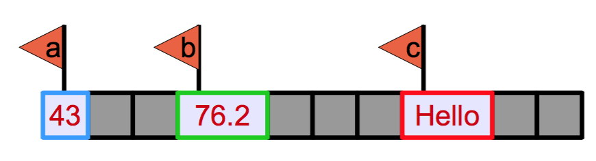

weight_kg = 60Python Basics
Python Basics: Types, Objects, Values, Variables and Operators
What is Python?
Python is a general purpose programming language which means that it wasn’t designed to solve a particular problem or group of problems (like R or Matlab) but any problem you can think of to solve on a computer. Consequently, you can use Python to do almost anything from analyze data to running computer systems to creating games.
Though comprised of fairly basic syntax (i.e. the grammar of the commands you give it) it is incredibly powerful. It is relatively easy to pick up as well and thanks to a very large and growing set of external modules (or blocks of code) written by other programmers, you can do complicated things quickly and easily.
One of the reasons for this power is that it is (to a certain degree) an interpreted language. This means that the code you type gets translated into instructions the computer can understand as Python reads it. There is not a separate optimisation or ‘compilation’ step to create your executable/binary before you can run your code like there is with some other languages like C++. This allows the language to be very dynamic but does have the drawback of being slower than others. However, there are many ways Python has of overcoming these drawbacks and you will almost certainly never notice a problem!
Now we have learned the technical aspects of using the Python interpreter, we can move on to the basics of programming using it. The first thing we’ll learn about is how Python stores and interprets information.
Python at the Terminal
We could be using Python from the terminal, and perform basic calculations like the following:
python3In your terminal something similar to the following should appear:
Python 3.11.2 (v3.11.2:878ead1ac1, Feb 7 2023, 10:02:41) [Clang 13.0.0 (clang-1300.0.29.30)] on darwin
Type "help", "copyright", "credits" or "license" for more information.
>>>And you can perfom math calculations like the following:
3 + 5 * 4Output:
23But this is not a great use of Python capabilities, and again it will not allow us to have a reproducible environment. So lets move on to our Jupyter Notebook and lets start running some python code!
Using Python in Jupyter Notebook
Types, Objects, Values and Variables
To do anything useful with data, we need to assign its value to a variable otherwise we’d have to write the whole analysis as one long calculation.
But what is a variable? And what is it’s relation to how Python organizes the information you give it?
This is all covered by four terms:
- Types – How to interpret data in a memory location (‘object’) and what operations can be performed by it
- Object – Defined area of memory that holds the data (‘values’) associated with a type
- Value – Actual data/bits in memory interpreted by the (‘type’)
- Variable – A flag or name of an area of memory (‘object’)
This probably seems quite abstract but it can be very useful to know the difference as we progress!
Another way of looking at this is in terms of a physical object like a laptop:
In this case, the Object is the physical laptop sitting on the desk, the Type of the object is ‘Laptop’, the Value is the bits and pieces that actually make up the laptop (forming a MacBook in this case) and finally the Variable would be who’s laptop it was, e.g. Fred’s laptop.
Assigning Variables
In Python, we can assign (to give a value a name by associating a variable with it) an object or value to a variable (a value that has a name associated with it.), using the equals sign =. For example, to assign value 60 to a variable weight_kg, we would execute:
From now on, whenever we use weight_kg, Python will refer back to the Object it points to (in this case an integer with value ‘60’) and effectively substitute it’s value where the variable is.
When you run code to create a variable, Python performs the following actions:
- create space for the integer object in the computer’s memory
- mark it as being of type ‘Integer’
- assign the value ‘60’ to it
- label it with ‘weight_kg’.
This all happens each time you create a new variable, so if you ran the following code:
a = 43
b = 76.2
c = "Hello"What happens in the computer’s memory can be shown like this:

Where the dark grey boxes are elements of the computer’s memory, the light grey boxes assigned memory with the values inside, the coloured outline is the type and the flags indicate where each variable points to.
Types of data
Python knows various types of data.
The four basic ones (not including the collection types) are:
- integer numbers - whole numbers
- floating point numbers - decimal numbers
- strings - collections of letters
- booleans - a binary type that can only have the values
TrueandFalse
In the example above, variable weight_kg has an integer value of 60. To create a variable with a floating point value, we can execute:
weight_kg = 60.0And to create a string (as for the variable c in the example above) we simply have to add single or double quotes around some text, for example:
weight_kg_text = "weight in kilograms:"Using Variables in Python
To display the value of a variable to the screen in Python, we can use the print function as we did before:
print(weight_kg)60.0Output:
60Not that we can display multiple things at once using only one print command:
print(weight_kg_text, weight_kg)weight in kilograms: 60.0Output:
weight in kilograms: 60To change the value of the weight_kg variable, we have to assign weight_kg a new value using the equals = sign:
weight_kg = 65.0
print('weight in kilograms is now:', weight_kg)weight in kilograms is now: 65.0Output:
weight in kilograms is now: 65.0Exercise
Have a go at creating some variables of the three basic types we’ve been looking at: Integer, Floating Point, Boolean and String.
Print each out using the print function.
Basic Operators
We now know how to create variables to store our data but we don’t know how to manipulate them at the moment. This is done using ‘Operators’.
Operators are symbols that perform specific operations on one or more objects. A subset of these are the arithmetic operators you’re already familiar with:
- Multiplication:
a * b - Addition:
a + b - Subtraction:
a - b - Division:
a / b
For example, a+b is the addition operator being applied to the objects pointed at by the variables a and b. What operators you can use depends on what the objects you’re applying them to are so some things won’t work - you can’t divide two strings or add a string and a number for example.
Other Operators
As well as these basic operators, there are also more language specific ones:
- Assignment:
a = b - Addition/Subtraction and assignment:
a += b,a -= b - Exponent:
a ** b( e.g.10**3 = 1000) - Modulus:
%(e.g.9 % 4 = 1) - Floor Division:
a // b(e.g.9 // 4 = 2) - Indexing:
[]
You can see that assignment (=) which you’ve already met is just another operator - it will attempt to assign the object or value on the right to the variable on the left. Another of these you will use a lot is the Indexing operator ([]). This is generally used to access elements of collections like getting a single character from a string, e.g.
my_str = "TESTING"
first = my_str[0]
third = my_str[2]